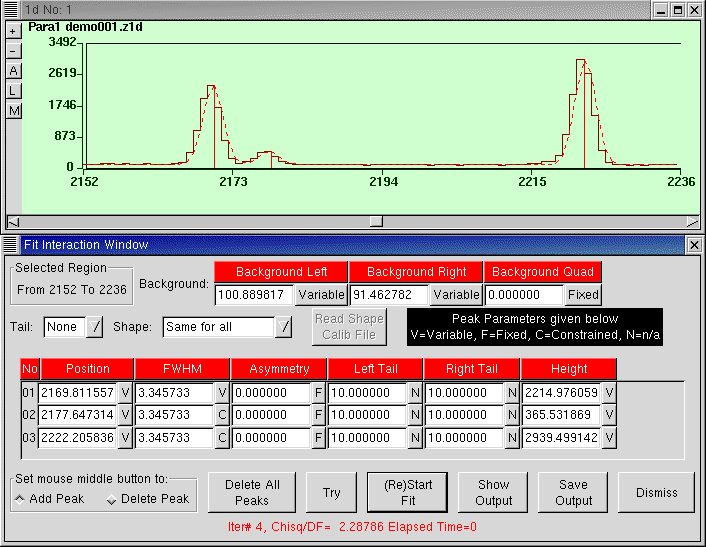

The Fit Interaction Window is a complex interface which needs detailed explanation. Peak fit is a non-linear least squares minimization algorithm. Normally, chi-square decreases with each iterarion. Because of the non-linearities, the process can diverge or fail, or may take an uneccessarily long time to complete. To cope with possible problems, the Fit interface is designed to give the user a lot of manual control, allowing some (or all) parameters to be frozen and others to be optimized by the program.
To start Peak Fit, mark a region by dragging the cursor (and if deisred, zoom it), then select Peak Fit from the context menu.
When Peak Fit is started, the peaks obtained in a previous Peak Search are already included. Additional peaks can be entered by clicking the middle button at the desired point in the spectrum window. (If the middle button doen't work, see Mouse Problems). It is also possible to delete peaks. For this "Set mouse middle button to: Delete Peak" at the bottom left corner of the window (and later back to "Add Peak"). Now, a middle button click in the spectrum window will delete the nearest peak. There is also a "Delete All Peaks" button at the bottom row.
The first thing is to set the options Tail and Shape. The Tail option takes on the values:
None
Left
Right
Both
The Shape option takes on the values:
Same for all
Independent
From Shape Calib
The following are the parameters:
Background Left: The value of the background at the left of the fit region.
Background Right: The value of the background at the right of the fit region.
Background Quad: The curvature of the backround. Positive values indicate upward curvature. By default Quad is not used: its value is set to zero and flag to "Fixed".
Position: The position of the peak (channel number).
FWHM: The full-width-at-half-maximum in channels.
Asymmetry: By default this parameter is not used (value set to zero and flag to F=Fixed). When used, asymmetry represents FWHM(Left) - FWHM(Right) and the value in the FWHM column then becomes the average of FWHM(Left) and FWHM(Right).
Left Tail: If used (see Tail option above), the flag N=Not Applicable must be changed to F=Fixed (for manual adjustment) or V=Variable. Left tail is the distance (in channels) from the centre of the peak to the point where an exponential tail is used instead of a Gaussian. It makes sense only if the value is small or comparable to FWHM, otherwise it will not have any effect.
Right Tail: Similar to Left Tail (above).
Height: The peak height. Often this is the main parameter to be fitted and accordingly the flag should be "V=Variable".
Each parameter has a starting value (displayed) which can be edited by the user. Each parameter has a Flag associated with it. The flags are:
V=Variable
F=Fixed
C=Constrained
N=Not Applicable
The background can be chosen to be linear or quadratic. By default the background is linear. As a first attempt the background should always be chosen linear. A quadratic bacground can even be made to look like a peak! If quadratic background is attempted, the quad coefficient could be first adjusted manually starting with very small +ve or -ve values, like 1.0e-04.
Peak Fit procedure for HpGe spectra:
1. Obtain FWHM values for isolated peaks by using Quick Fit and note down how FWHM varies with channel number.
2. Try Peak Fit on the same isolated peaks to determine is Left Tail (or Left Tail + Right Tail) is necessary. If it is, work on fits to isolated peaks and see how the Tail parameter(s) vary as a function of channel number.
3. Dont use Asymmetry. Normally, its not required for HpGe spectra.
4. Perform Peak Search setting "FWHM" to an approximate value seen in step 1 above and adjust "Level" to avoid false peaks.
5. Mark a region of the spectrum containing several peaks, including doublets, but not too wide a region, as the background would be changing too much.
6. Start Peak Fit. Set the Tail option as desired and the Shape option to "Same for all".
7. Flags for Background Left and Background Right should be Variable (Normally, Quad should be zero and Fixed).
8. Flags for all the Positions should be V=Variable. (However, for weak peaks, F=Fixed can be sometimes better).
9. The flag for FWHM for the first peak should be V=Variable and the value must be set to the FWHM obtained in step 1. (One could even set the flag to F=Fixed). For the remaining peaks, the flags should be "C=Constrained" which has the meaning "Same as previous peak".
10. Asymmetry should be zero and F=Fixed for all the peaks.
11. Left Tail and Right Tail, if used, should be given values found out in step 2 and flagged to F=Fixed. Never try to vary the tail parameters while doing a multi peak fit!
12. Flags for all the Height parameters should be V=Variable.
13. Optional step: At this stage you could click on "Try". This function displays the calculated spectrum without attempting chi-squares minimisation. You could now manualy correct any parameters that appear to be far off.
14. Click (Re)Start Fit. If all is well, you should get the desired result in short enough time. Look at the value of "Chisq/DF" at the bottom of the Fit Interaction Window. Acceptable values are in the range of about 1.5-3. If required, make some changes and (Re)Start Fit. Particularly note if any peak position has drifted far away from where it was supposed to be. In this case correct the peak position and flag it to F=Fixed. See if any Height value has become negative. (This happens for weak peaks in the presence of nearby strong peaks.)
The other buttons at the bottom row are Show Output and Save Output.
Click on Show Output to see the Fit results and Save Output to save to
the file fit.out. The file fit.out, in the directory
where LAMPS was started accumalates the results of all the saved outputs (output
is written in append mode) and is a text file suitable for printing.
Peak Fit procedure for other cases (non HpGe):
After understanding all the options explained above, one can get good fits to charged particle spectra, an elastic scattering peak riding over a very broad fission peak etc. However fits to these type of spectra are usually not so good. The reason is the non-Gaussian shapes. Multi-peak fit is hardly necessary for these spectra, Area extraction is generally enough. Only if there are overlapping peaks to be resolved, Peak Fit should be used. Careful use of Peak Fit using Asymmetry and a good amount of manual adjustment produces good results in these cases.